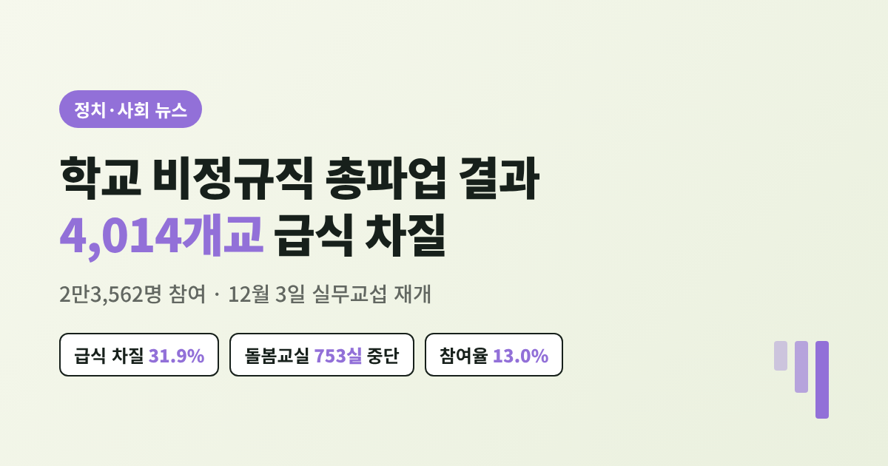
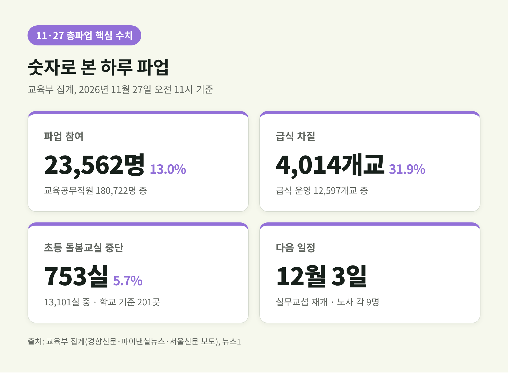
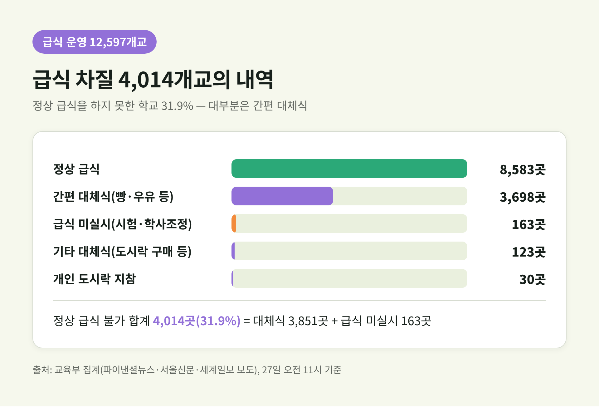
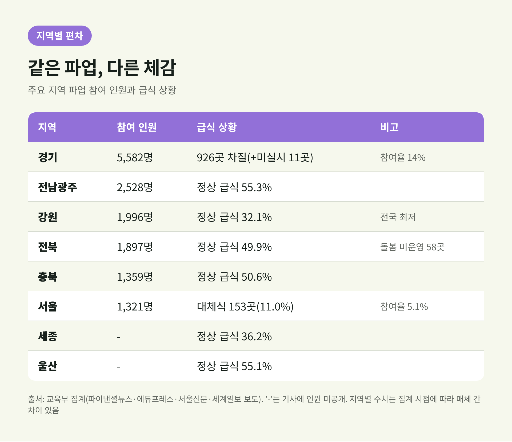
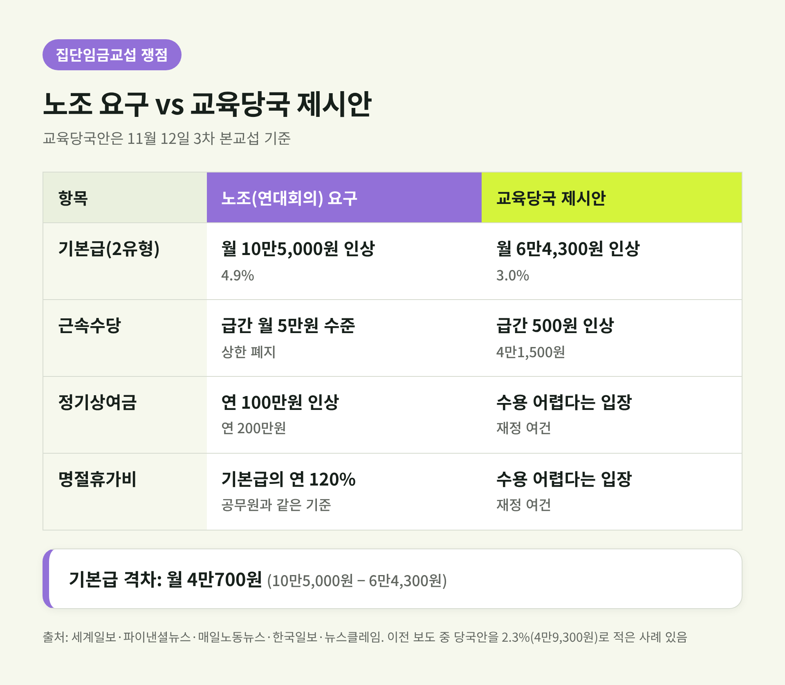
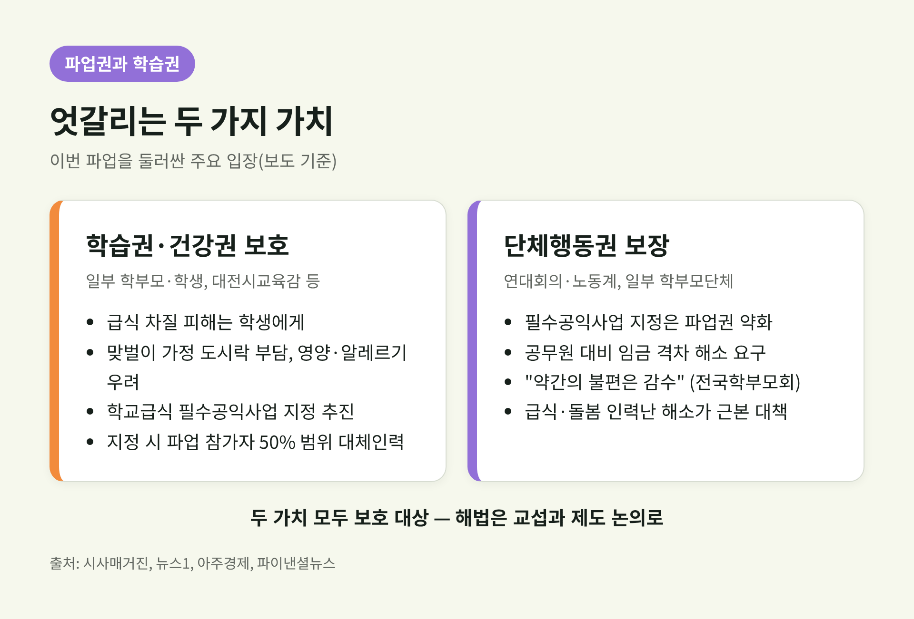
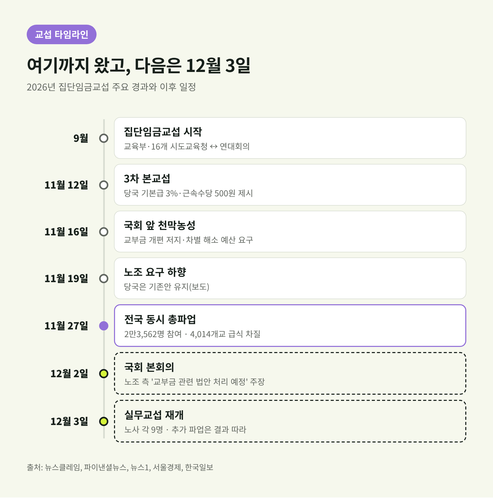

학교 비정규직 총파업 결과, 4014개교 급식 차질과 12월 교섭 재개

이번 글에서는 11월 27일 학교 비정규직 총파업이 실제로 어떤 결과를 남겼는지 정리합니다. 교육부 집계로 본 참여 규모와 급식·돌봄 차질, 지역별 편차, 그리고 다음 주 재개되는 임금교섭의 쟁점을 차례로 짚겠습니다.
세 줄 요약
- 교육공무직원 18만722명 중 2만3,562명(13.0%)이 파업에 참여했습니다(교육부, 27일 오전 11시 기준).
- 급식 운영 학교 1만2,597곳 중 4,014곳(31.9%)이 정상 급식을 하지 못했고, 초등 돌봄교실 1만3,101실 중 753실이 문을 닫았습니다.
- 하루 파업은 끝났고, 노사는 12월 3일 실무교섭을 재개합니다. 기본급 인상안 격차는 월 4만700원입니다.
■ 숫자로 본 11월 27일
교육부는 16개 시도교육청과 국립학교 소속 교육공무직원 18만722명 가운데 2만3,562명이 파업에 참여했다고 밝혔습니다. 참여율은 13.0%입니다. 경향신문·파이낸셜뉴스·서울신문·에듀프레스 등이 같은 수치를 전했습니다.
다만 노조 측 숫자는 다릅니다. 전국학교비정규직연대회의(이하 연대회의)는 사전에 "4만여 명 참여"를 예고했고, 일부 매체는 당일에도 노조 추산으로 4만여 명을 보도했습니다. 교육부 집계는 오전 11시 기준이라는 점, 노조 추산은 집계 방식이 공개되지 않았다는 점을 함께 감안해 읽을 필요가 있습니다.
연대회의는 민주노총 전국학교비정규직노조, 공공운수노조 전국교육공무직본부, 전국여성노조로 이뤄진 연대기구입니다. 조합원들은 오후 1시 30분 서울 여의도 마포대교 남단 일대에서 총파업대회를 열었습니다. 노조 추산 참가 인원은 약 2만 명이었습니다. 교육공무직본부는 국회 앞, 여성노조는 청와대 사랑채 인근에서도 대회를 진행했습니다.

■ 급식 차질 4,014개교, 그 안을 들여다보면
급식을 운영하는 학교는 1만2,597곳입니다. 이 가운데 8,583곳은 평소처럼 급식을 했고, 4,014곳(31.9%)은 정상 급식을 하지 못했습니다. 전국 학교 열 곳 중 세 곳꼴입니다.
4,014곳의 내용은 조금씩 다릅니다.
- 빵·우유 같은 간편 대체식: 3,698곳
- 외부 도시락 구매 등 기타 대체식: 123곳
- 학생 개인 도시락 지참: 30곳
- 정기고사·학사일정 조정으로 급식 미실시: 163곳
대체식이 가장 흔한 대응이었던 셈입니다. 현장에서는 빵과 우유 외에 떡과 샌드위치, 주스와 귤, 과채음료 등이 점심을 대신했습니다. 일부 학교는 단축수업으로 학생들을 일찍 하교시켰습니다.
이런 대응이 나올 수밖에 없는 구조도 있습니다. 파이낸셜뉴스는 현행법상 파업 기간에 외부 대체인력 투입이 제한돼, 학교가 대체식 제공이나 기존 교직원 투입 같은 임시방편에 기댈 수밖에 없었다고 전했습니다.

■ 돌봄·유치원·특수학교는 상대적으로 작았습니다
돌봄 공백은 급식보다 규모가 작았습니다. 초등 돌봄교실을 운영하는 6,044개교 가운데 201곳(3.3%)이 돌봄을 열지 못했습니다. 교실 단위로는 1만3,101실 중 753실(5.7%)이 멈췄습니다.
흔히 "돌봄교실 753곳"으로 전해진 숫자는 학교가 아니라 교실 기준입니다. 학교 기준으로는 201곳입니다.
파업 참여자가 나온 학교 655곳은 대체인력을 투입해 돌봄을 정상 운영했습니다. 돌봄 전담 인력 1만2,904명 중 파업 참여자는 1,094명(8.5%)이었습니다.
유치원 방과후과정은 3,987곳 중 27곳(0.7%)이 중단됐습니다. 인천 17곳, 강원 8곳, 경기 2곳입니다. 특수학교는 154곳 중 충남의 2곳이 재량휴업 등으로 학사일정을 조정했습니다.
■ 지역별로는 편차가 컸습니다
같은 날 같은 파업이었지만, 지역마다 체감은 크게 달랐습니다.
참여 인원은 경기가 5,582명으로 가장 많았습니다. 이어 전남광주 2,528명, 강원 1,996명, 전북 1,897명, 경남 1,640명, 충북 1,359명, 서울 1,321명, 인천 1,313명 순이었습니다.
경기에서는 교육공무직 3만9,200명 중 14%가 참여했는데, 급식 종사자만 놓고 보면 참여율이 31%까지 올라갔습니다. 급식 차질 학교도 926곳으로 가장 많았고, 11곳은 아예 급식을 하지 않았습니다.
정상 급식 비율로 보면 강원이 가장 낮았습니다. 669곳 중 215곳(32.1%)만 평소처럼 급식을 했습니다. 세종 36.2%, 전북 49.9%, 충북 50.6%, 울산 55.1%, 전남광주 55.3%가 뒤를 이었습니다.
서울은 사정이 달랐습니다. 교육공무직 2만5,828명 중 1,321명(5.1%)이 참여했고, 급식 학교 1,392곳 중 153곳(11.0%)이 대체식을 제공했습니다. 돌봄교실은 1,841실 중 24실만 문을 닫았습니다.
지역별 급식 차질 학교 수는 매체마다 조금씩 다릅니다. 예컨대 강원은 423곳(교육부 집계 인용)과 454곳(시도교육청 자료 인용)이 함께 보도됐습니다. 집계 시점과 기준 차이로 보이며, 이 글은 교육부 집계를 기준으로 삼았습니다.

■ 왜 협상이 멈췄나: 월 4만700원의 간극
파업의 직접적인 이유는 집단임금교섭 결렬입니다. 교육공무직의 임금은 학교별로 정하지 않습니다. 교육부와 16개 시도교육청이 한쪽, 연대회의가 다른 한쪽에 앉아 한꺼번에 정하는 '집단교섭' 구조입니다. 그래서 한 번 교섭이 막히면 전국 학교가 동시에 영향을 받습니다.
올해 교섭은 9월 시작됐습니다. 파이낸셜뉴스에 따르면 본교섭 3회, 실무교섭 6회가 열렸습니다. 노조는 11월 19일 요구 수준을 낮췄지만, 교육당국이 기존안을 유지해 합의에 이르지 못했다고 전해집니다.
양측 안을 나란히 놓으면 이렇습니다.
| 항목 | 노조(연대회의) 요구 | 교육당국 제시안(11월 12일) |
|---|---|---|
| 기본급(2유형) | 월 10만5,000원(4.9%) 인상 | 월 6만4,300원(3.0%) 인상 |
| 근속수당 | 급간 월 5만원 수준으로 인상, 상한 폐지 | 급간 500원 인상(4만1,500원) |
| 정기상여금 | 연 100만원 인상(연 200만원) | 재정 여건상 수용 어렵다는 입장 |
| 명절휴가비 | 기본급의 연 120%(공무원과 같은 기준) | 재정 여건상 수용 어렵다는 입장 |
기본급만 보면 차이는 월 4만700원입니다. 근속수당은 노조 요구와 당국안의 간격이 훨씬 넓습니다.
참고로 당국안을 "2.3%(월 4만9,300원)"으로 소개한 보도도 있습니다. 11월 12일 3차 본교섭에서 3%안이 제시되기 전의 수치로 보이며, 27일 당일 주요 보도는 대부분 3%안을 기준으로 삼았습니다.

■ 양측이 각자 내세우는 근거
노조의 논리는 '격차'입니다. 연대회의는 당국안이 내년 공무원 보수 인상률(3.9%)에도 못 미친다고 지적합니다. 자체 추산으로 공무원과의 연간 임금 격차가 근속 1년 차 약 294만원, 10년 차 약 1,057만원, 15년 차 약 1,827만원까지 벌어진다고 주장합니다. 집회에서는 4년 차 초등 조리실무사의 월급이 220만원이라는 증언도 나왔습니다. 정인용 교육공무직본부장은 "우리의 노동을 더 이상 값싼 비용으로 취급하지 말라"고 말했습니다.
교육당국의 논리는 '재정'입니다. 상한 폐지와 상여금·명절휴가비 인상은 재정 여건을 이유로 수용하기 어렵다는 입장으로 알려졌습니다. 중부일보에 따르면 경기도교육청은 2027년 본예산에 학교 비정규직 임금으로 약 1조4,600억원을 편성했는데, 실제 필요한 총임금보다 약 5% 부족하고 내년 인상분도 반영되지 않았습니다. 교육청들은 정부의 지방교육재정교부금 개편이 현실화되면 '재정 절벽'이 올 수 있다고 우려합니다.
여기서 흥미로운 지점이 하나 있습니다. 교부금 개편에 대해서는 노조와 교육청의 걱정이 같은 방향을 향합니다. 현재는 내국세의 20.79%를 교육청 재원으로 떼어 두지만, 정부안은 이를 경제성장률과 학령인구 변화에 연동하는 방식입니다. 노조는 이것이 교육예산 삭감이라며 개편 중단을 요구 목록에 올렸고, 민태호 학교비정규직노조 위원장은 "초과세수 시대를 초과격차 시대로 만들려는 것을 두고 볼 수 없다"고 말했습니다.
교육부는 대화 의지를 밝혔습니다. 교육부 관계자는 "교육부와 16개 시도교육청은 올해 집단임금교섭 타결을 위해 앞으로도 최선을 다하겠다"고 했습니다. 최은옥 교육부 장관 직무대행도 파업 전날 단체행동권을 존중한다며 학생과 학부모 불편이 없도록 조속히 합의점을 찾겠다고 했습니다.
■ 학부모와 학생, 그리고 파업권과 학습권
가장 직접적인 영향을 받은 쪽은 학생과 학부모입니다. 현장에서는 "피해는 아이들 몫"이라는 학부모의 목소리와 "또 급식 안 해요"라는 학생들의 반응이 전해졌습니다. 맞벌이 가정의 도시락 부담, 성장기 학생의 영양 균형과 식품 알레르기 대응도 우려로 꼽힙니다. 대전의 한 고교 학생회는 안정적인 급식 제공을 공개적으로 촉구하기도 했습니다.
반대 목소리도 있습니다. 평등교육실현을 위한 전국학부모회는 "약간의 불편함 정도는 감수할 수 있다"며 파업 지지를 밝혔습니다. 차별적 임금체계 개편, 방학 중 비근무자 생계 대책, 급식·돌봄 인력난 해소를 함께 요구했습니다. 충북의 한 학부모단체도 불편을 감수하겠다는 취지의 입장을 낸 것으로 보도됐습니다.
이 대립은 제도 논쟁으로 이어집니다. 대전시교육감은 학교급식을 필수공익사업으로 지정해 파업 때도 대체인력을 투입할 수 있게 하는 법제화를 추진하겠다고 밝힌 바 있습니다. 지정되면 파업 참가자의 50% 범위 안에서 외부 인력을 쓸 수 있게 됩니다. 노동계는 이 방안이 파업권을 사실상 약화시킨다며 반대합니다.
어느 쪽 주장도 쉽게 물리치기 어렵습니다. 헌법이 보장하는 단체행동권과 학생의 건강·학습권은 모두 보호받아야 할 가치이기 때문입니다.

■ 앞으로의 일정: 12월 2일과 12월 3일
하루 파업은 27일로 끝났습니다. 노사는 12월 3일 실무교섭을 재개하며, 양측에서 각 9명이 참여할 예정입니다. 뉴스1에 따르면 노조는 당장 추가 파업 계획은 없고, 집중교섭 여부를 논의하고 있습니다.
다만 변수가 남아 있습니다. 민태호 위원장은 집회에서 2차 총파업에 대비하자고 말했습니다. 노조는 교부금 관련 법안이 12월 2일 국회 본회의에서 처리될 예정이라며, 이를 '교육예산 삭감 법안'이라고 비판하고 있습니다. 교섭 하루 전에 교육청 재정의 큰 틀이 정해질 수 있다는 뜻입니다.
과거와 비교해 보면 흐름이 조금 다릅니다. 지난해에는 11~12월 전국을 4개 권역으로 나눠 나흘간 순차 파업을 했지만, 올해는 전국 동시 하루 파업이었습니다. 지난해 교섭은 해를 넘겨 이어졌고, 1월에는 "신학기 총파업 가능성"까지 거론됐습니다.
전년과의 규모 비교는 조심스럽게 볼 필요가 있습니다. 세계일보는 지난해 급식 중단 비율을 35.7%로 보고 올해(31.9%)가 3.8%포인트 낮다고 했습니다. 반면 한국일보는 지난해 참여 인원 2만3,772명, 급식 차질 비율 30.6%로 전했습니다. 방식이 달랐던 만큼 어느 기준을 쓰느냐에 따라 결론이 달라집니다.

정리하면 이렇습니다. 이번 파업은 하루 만에 끝났지만, 쟁점은 하나도 정리되지 않았습니다. 기본급 월 4만700원, 근속수당 급간 수만 원의 간격이 남았고, 그 바탕에는 교육재정이라는 더 큰 질문이 놓여 있습니다.
노조는 '차별 해소'를, 교육당국은 '재정 여건'을 말합니다. 두 말 모두 숫자로 뒷받침되는 만큼, 결국 교섭 테이블에서 그 숫자를 어떻게 좁히느냐가 관건입니다.
"아이들 밥상이 협상 카드가 되지 않으려면, 협상이 먼저 끝나야 합니다."
12월 3일 교섭장에서 그 간격이 얼마나 줄어들지, 차분히 지켜볼 일입니다.
참고자료
- 경향신문 — 학교 비정규직 노동자 2만3562명 파업 참여…임금차별 해소 촉구 (2026-11-27)
- 파이낸셜뉴스 — '밥 대신 빵·우유로' 전국 31.9% 급식 파행… 돌봄교실 753곳 문 닫아 (2026-11-27)
- 파이낸셜뉴스 — 학교 비정규직 총파업…임금차별 해소·급식실 인력 충원 촉구 (2026-11-27)
- 뉴스1 — 학교비정규직 2만 3500여 명 총파업…전국 4014개교 급식 차질 (2026-11-27)
- 뉴스1 — 학교비정규직 총파업 마무리…내달 3일 실무교섭 재개 (2026-11-27)
- 뉴스1 — 빵·우유로 대신한 점심…급식·돌봄 파업에 학부모 "피해는 아이들 몫" (2026-11-27)
- 서울신문 — 학교 비정규직 총파업에 급식 차질…전국 학교 32% 대체식·급식 중단 (2026-11-27)
- 세계일보 — 학비노조 총파업에 전국 학교 31.9% 급식 차질 (2026-11-27)
- 에듀프레스 — 학교 비정규직 파업.. 급식·돌봄 공무직 2만 3천여 명 참여 (2026-11-27)
- 헤럴드경제 — "오늘은 왜 빵이에요?" 4000개 학교서 급식 차질 (2026-11-27)
- 매일노동뉴스 — 파업 나선 학교 비정규직, "값싼 노동자 아냐" (2026-11-27)
- 서울경제 — 여의도 메운 학교 비정규직 노동자들 (2026-11-27)
- 뉴스핌 — "우리는 반값 노동자가 아니다"…학교비정규직 2만명 총파업 (2026-11-27)
- 아주경제 — 학부모단체, 처우 개선 촉구 (2026-11-27)
- 한국일보 — 학교비정규직 4만 명 총파업에... 내일 급식 간소화, 도시락 지참 안내도 (2026-11-26)
- 중부일보 — 교육재정 부족한데 교부금 개편까지…임금 교섭 '지지부진' (2026-11-26)
- 뉴스클레임 — 학교비정규직 "근속수당 500원 인상은 모욕" 천막농성 돌입 (2026-11-16)
- 시사매거진 — 전국 학교비정규직 27일 총파업…아이들 밥상 또 협상 카드 되나 (2026-11-24)